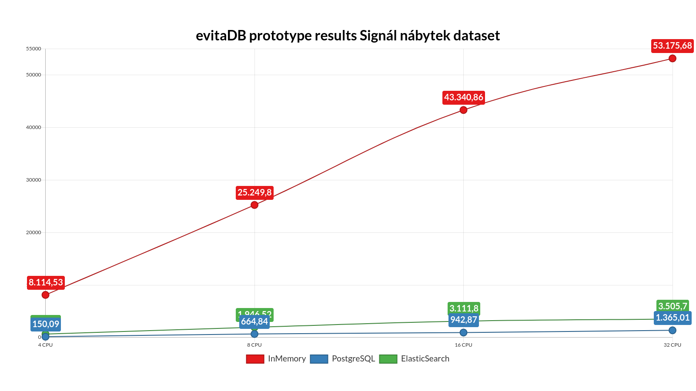
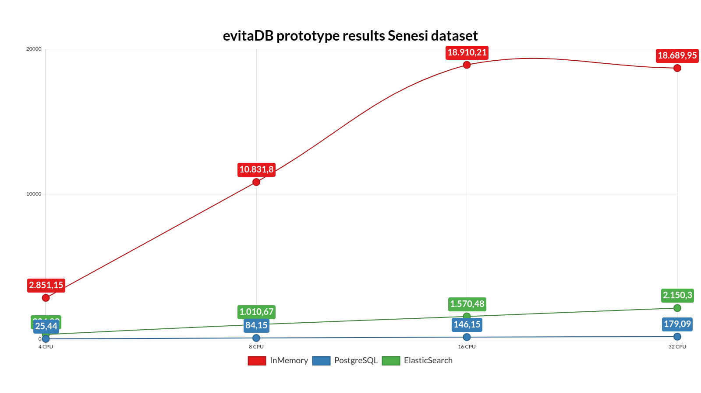

Evita Perón
Interpretation by Jan @Novoj Novotný
A single-purpose NoSQL database for fast reading, tailored to the requirements of e-shop solutions not only in the Czech Republic, but also abroad, will have an order of magnitude better throughput on the same hardware configuration than generic SQL or NoSQL database solutions
|
Examples:
|
| CPU: | Intel (R) Core™ i7-8700 3.20 GHz (6xCORE) |
|---|---|
| RAM: | 16 GB X 4 (2666 Mhz) CL13 |
| OS: | Ubuntu 18.04.5 LTS (GNU/Linux 5.4.0-42-generic x86_64) |
| Collection | Count |
|---|---|
| Entity | 117,475 |
| Prices of entities | 3,361,040 |
| Attributes of entities | 3,848,705 |
| Associated data of entities | 698,095 |
| References of entities | 967,553 |
| Entity inner components | Average cardinality |
|---|---|
| Prices of entities | 28.61 |
| Attributes of entities | 32.76 |
| Associated data | 5.94 |
| References | 8.24 |
147.47x PostgreSQL, 12.4x Elasticsearch

20.24x PostgreSQL, 4.38x Elasticsearch
105.25x PostgreSQL, 7.05x Elasticsearch
The most visible change is the shift in the purpose of tables representing the inner entity datasets (attributes, prices, and references). In the original model, all tables were used to search entities as well as to reconstruct entities into memory which turned out to be quite expensive. Therefore, in the new model, entities are reconstructed from binary form, and tables of these collections are now used only as indexes to search entities.
This layout complicates transactional updates (lock per document).
This means, that those data cannot be queried at the same time.
Storing single entity into a single document was not enough.
Multiple indexes are affected by entity upsert / delete.
This introduces consistency problems - since ES guarantee atomicity on document level only.
Price calculation is complex and required using "painless scripting language" to produce runtime field and post-filter is used for "between" constraint, this prevents valid evaluation of queries like:
or(
and(
facet("Category", 5),
startsWith("code, "Gorgeous-Rubber-Wallet-2-15"),
priceBetween(800, 2000)
),
facet("Category", 1)
)
According to the documentation, several different functionalities can be used for this in ES, starting with the enabled tag, indexed, or even the field type (object) itself. Unfortunately, the use of these features in the mapping varied in different versions of ES, and therefore, the references in different parts of the documentation were not consistent about which attribute did what.